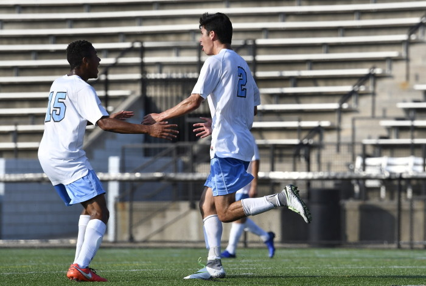

Experience
Software Engineering Intern - Seattle, WA (Summer 2018)
Implemented Unet convolutional neural net for multi-label neurological tissue feature recognition. 3D countour recognition and non linear voxel stitching. Alignment statistic toolkit development for open source data visualization web app. (Pytorch, Docker, OpenCV, Pillow, JSON, Clusters)
open source software
Co-Founder - Baltimore, MD (2016-Present)
Developing patented image reconstruction algorithms, integrating medical device software, leading clinical testing and product development for novel ultrasound needle guidance medical device.
Durr lab article
Machine Learning Intern - Seattle, WA (Summer 2017)
Designed entire Python based workflow pipeline for testing cochlear implant stimuli. Optimized cochlear implant stimulus parameters. (PySwarm, Python/C Wrapping, sk-learn, Matplotlib)
Software Development Assistant - Baltimore, MD (2017-2018)
Incorporated deep Q-learning network into virtual reality application for prosthetic users to train fluid upper limb prosthetic movement by completing virtual tasks. (TensorFlow)
Medical Imaging Assistant - Baltimore, MD (2016-2017)
Developed 3D landmarking software to correct generated surface mesh topology of cerebral features. (Shell Script, Python, Seg3D, Matlab)
Data Science Intern - Seattle, WA (Summer 2016)
Created bioinformatic analysis software for pituitary tumor DNA sequences. (R, Sanger Sequencing)
Research Assistant - Seattle, WA (2013-2015)
Refined novel protocols for bone research in zebrafish model.
Projects
An open source Python toolkit for realtime pupil dilation and movement detection for pupillometry and concussion analysis. (OpenCV, Pillow, Docker)
Android-app board game that includes a reinforcement machine learning assisted computer player and multi-threading. (Java, Android Studio, AWS, TensorFlow)
TEDxJHU Student Speaker
Student speaker on undergraduate entrepreneurship and medical technology for biannual TEDxJHU event.
Taught myself web design for developing my start up company's website. (HTML5, CSS, JavaScript, G Suite)
Matlab application for visualizing computed tomography (CT) sinogram input. (Matlab)
Representing Accuo at the annual VentureWell Xcelerator conference for workshopping undergraduate Biomedical Engineering startups.
2016 Poster "Conserved Dynamics in Genes Associated with Human BMD and Bone Disorders During Zebrafish and Rat Bone Formation"
2015 Poster, Presentation, Abstract "Cross-Species Analysis in Zebrafish and Rat Reveals Conserved Dynamics in Genes Associated with Human BMD and Bone Disorders"
Activities
NCAA Varsity Soccer Athlete
Four year varsity athlete, 3x Centenial Conference Academic Honor Roll, Academic All-Region, Chi Alpha Sigma National College Athlete Honor Society, Student Athlete Peer Tutor (athletic profile)
Teaching Assistant
Biomedical Engineering: Programming in Python,Matlab, and R
Biomedical Engineering: Molecules and Cells
Hopkins Biomedial Engineering Society
Three year mentor, Senior counselor
Hopkins Undergraduate Bioethics Society
Member
Johns Hopkins Brain Simulation Lab
Volunteer for wearable device studies
Outdoor Lover, Adrenaline Junkie
:)
About
Education:
Johns Hopkins University
Majors: Computer Science and Biomedical Engineering (Computational Biology)
Minor: Computer Integrated Surgery
Dean's List - 2016, 2017, 2018
Contact:
Email: achew4@jhu.edu
Phone: (425) 442-3169
My Story

Hi! My name's Arden...
In the spring of 2014 I blew out my right knee and spent months resigned to a couch. As an avid athlete and self-proclaimed adrenaline junkie, I wanted nothing more than to get off that couch. I gained a newfound appreciation for people such as my Grandmother, who continues to travel the world with the help of her prosthetic leg. Mobility and sport give me joy and purpose. Since recovering from my injury, I have committed myself to innovating a future of accessible and intuitive healthcare. I strongly believe this future will be backed by data science, machine learning, and artificial intelligence, of which I am deeply passionate about and excited to contribute to.